01–02 日本桥关键画（已接受）
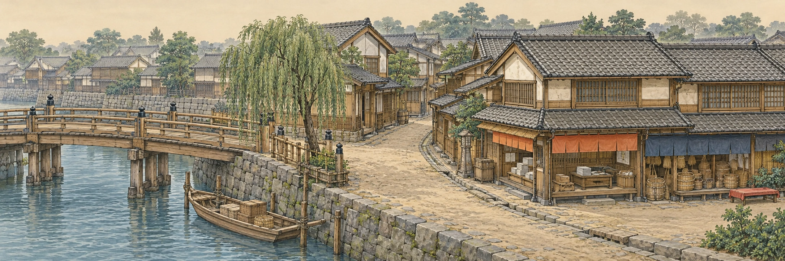
原生2172×724，等比绘制2100×700，前2000可见，右100用于接缝。
已生成14/14段。上方是按建议中心裁窗作的硬切粗拼，用来暴露接缝、尺度与走道问题，尚未做最小差异切线；不代表运行接缝已通过。下方保留每张完整原画，点击可看原生PNG。生成工具返回的真实尺寸逐张记录。

原生2172×724，等比绘制2100×700，前2000可见，右100用于接缝。
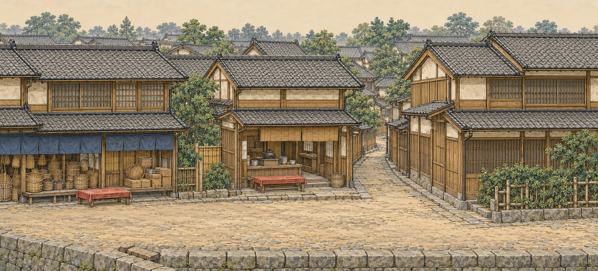
原生1862×845 · WebP 726 KiB · No people or text. Indigo shop, tea counter, side alley and dry foreground road are visible. Native framing wider than requested; preserve scale when cutting, verify door height and curb before runtime placement.
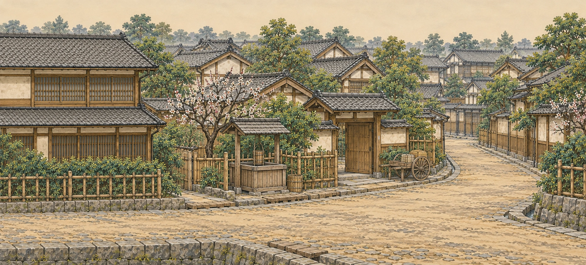
原生1862×845 · WebP 736 KiB · No people, animals or writing. Japanese courtyard, well, plum tree, bamboo fence and open side lane visible. Road remains connected; independently check the crop and curb transition against segment03 before runtime.
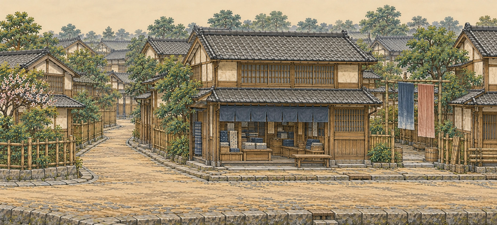
原生1862×845 · WebP 711 KiB · No background people, animals or text. Indigo textile shop, russet/indigo cloth yard, dry road, side lane and bamboo transition visible. Cultural forms and restrained palette match accepted master; exact boundary geometry needs integration review.
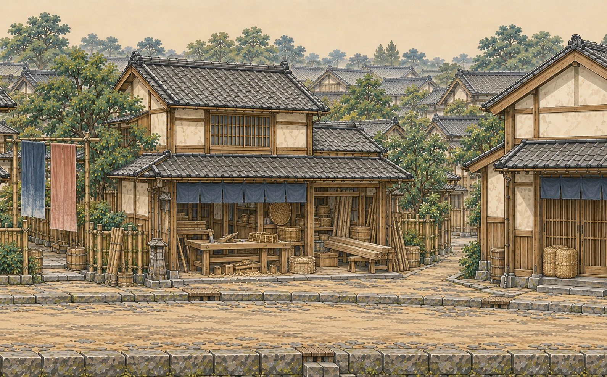
原生1591×988 · WebP 701 KiB · No people or lettering. Bamboo/wood workshop, hand tools, low benches, cloth-yard left continuation and rice-bale right transition. Native aspect now matches1128:700 closely; door height and connected pavement visually compatible. Exact seams still need pair review.
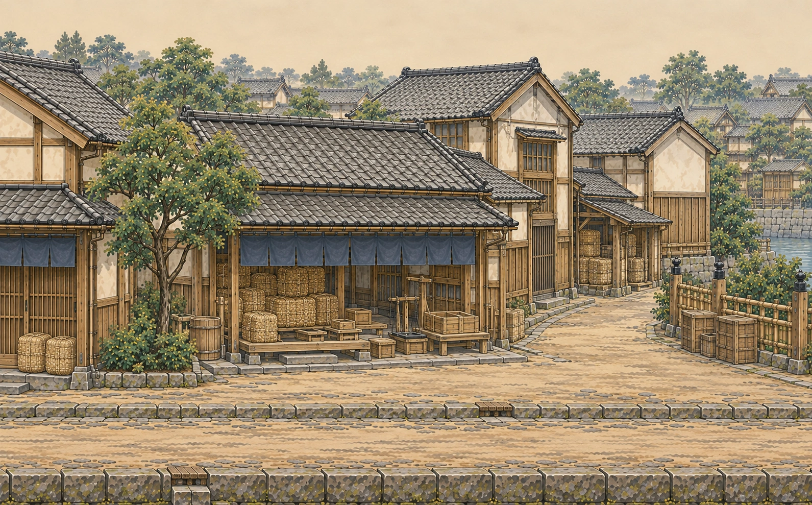
原生1591×989 · WebP 674 KiB · No background people or writing. Rice bales, measuring boxes and loading apron; right lane opens to canal. Same fine material treatment, empty usable street. Exact joining curb and roof edges need runtime seam review.
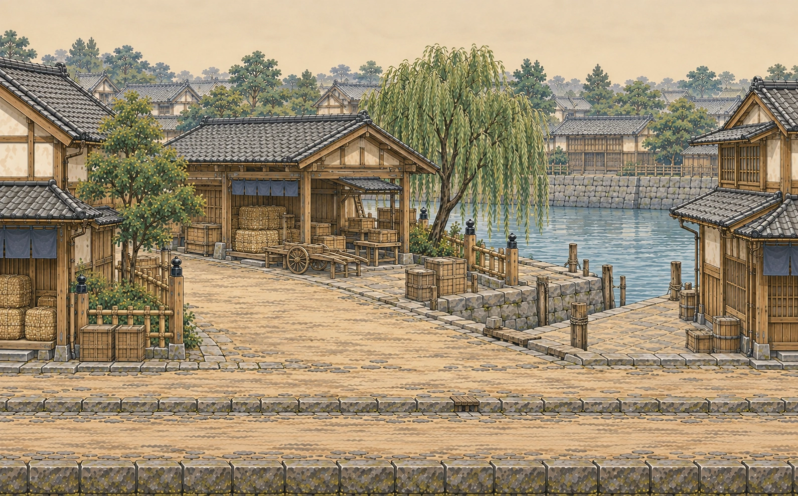
原生1591×989 · WebP 694 KiB · No people, animals or writing. Cargo awning, handcart and open apron connect dry foreground street to canal landing; river behind road. Lower roofs and open water break storefront rhythm. Native scene checked for connected pavement, not yet seam-approved.
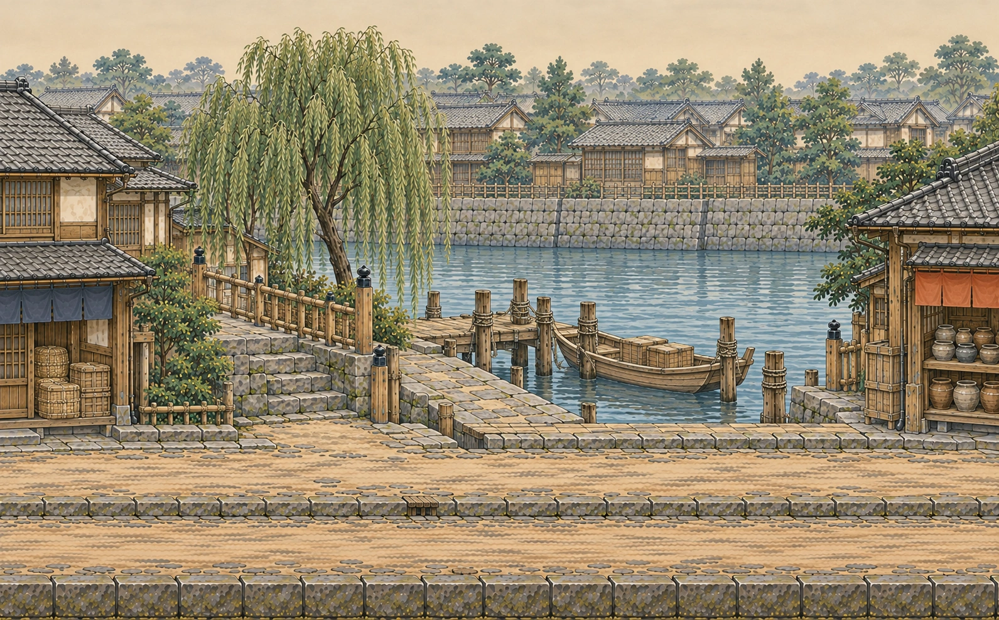
原生1591×988 · WebP 731 KiB · No people, lettering or animals. Empty moored open Japanese cargo skiff, stout piers, connected dry quay access, canal behind main road. Foreground walking strip is intact; landing and pottery transition reviewed visually, exact adjacent seam pending.
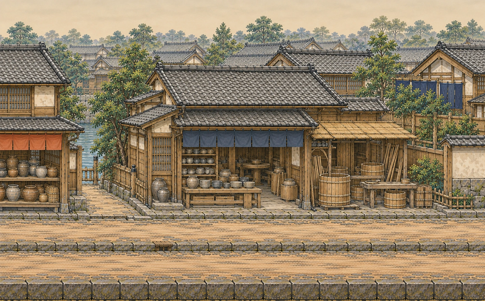
原生1592×988 · WebP 726 KiB · No people, lettering or animals. Pottery shelves, unused low wheel, cooper's vats and bamboo shelter; canal recedes through left alley. Main dry street and stone curb continue. Native small ceramic shapes and tools visually checked; exact seam and foot anchors pending integration.
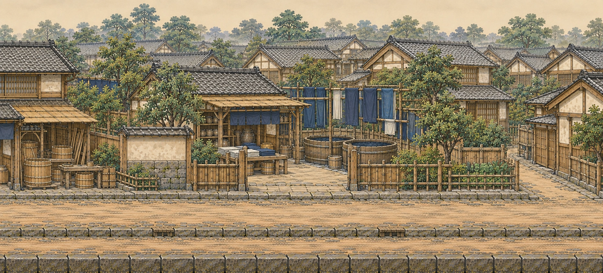
原生1862×845 · WebP 749 KiB · No background people, animals or lettering. Old wooden dye vats, plain indigo cloth, open courtyard gate and residential garden transition. Wider native aspect than requested recorded; recommended crop is optional, verify full original against adjacent segment before cutting.
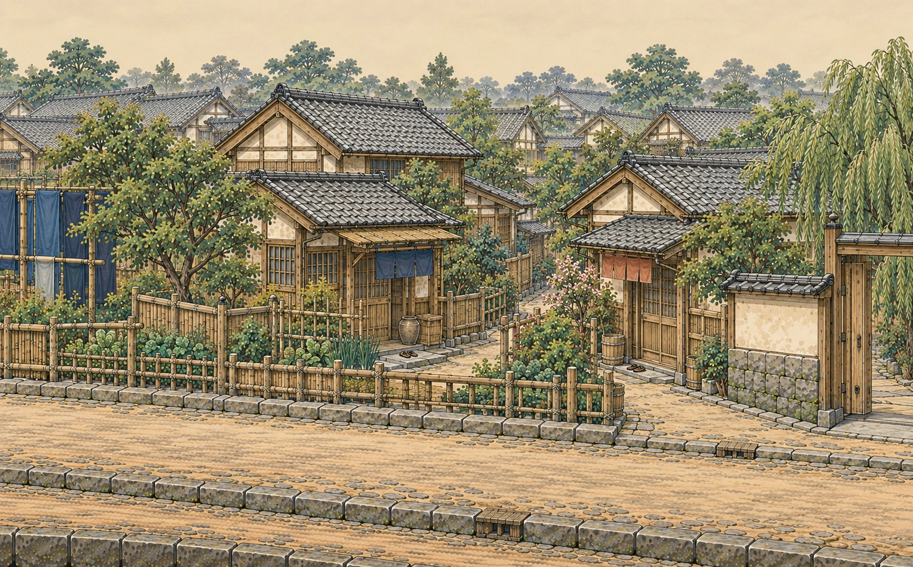
原生1591×988 · WebP 762 KiB · No background people, animals or letters. Two modest Japanese homes, sandals at thresholds, vegetable gardens, sloping side lane and open garden-gate right transition. Main street stays dry; actual continuous foot anchors need game placement review.
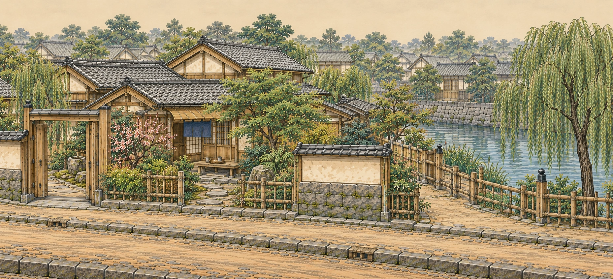
原生1858×846 · WebP 776 KiB · No people, animals or writing. Open Japanese courtyard gate, modest home, sparse blossoms, tea tray, rooted willow and waterside fence. Garden path connects to foreground road; canal returns behind street. Native aspect wider than requested; exact cut and road-height join require integration.
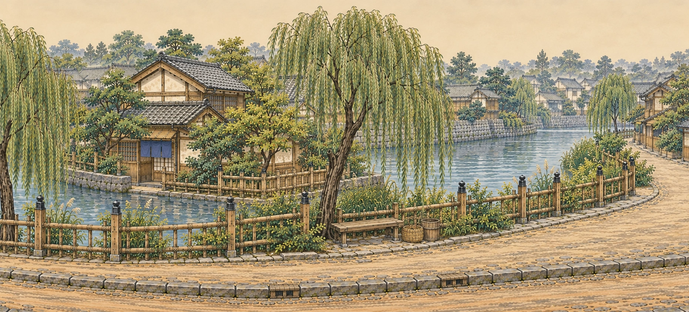
原生1862×845 · WebP 742 KiB · No people, animals or writing. Willow-rooted soil pockets, bench and empty basket, canal bend and distant low Japanese roofs; dry main path curves naturally toward village. Same diffuse daylight and material treatment. Final native original reviewed; exact13→14 cut and runtime anchors still pending.